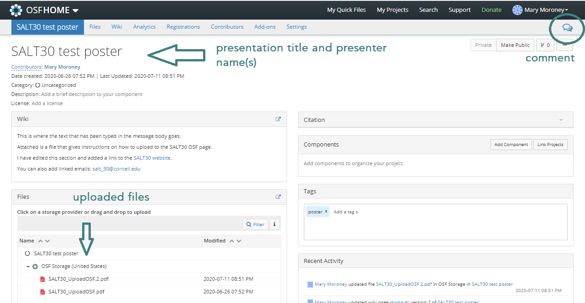
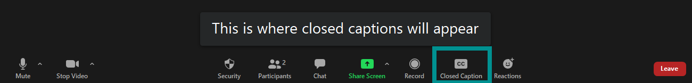
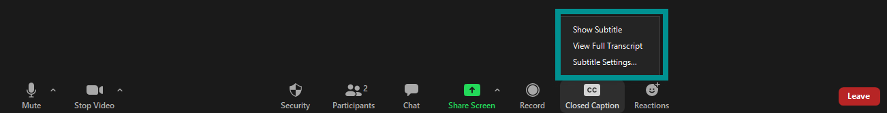
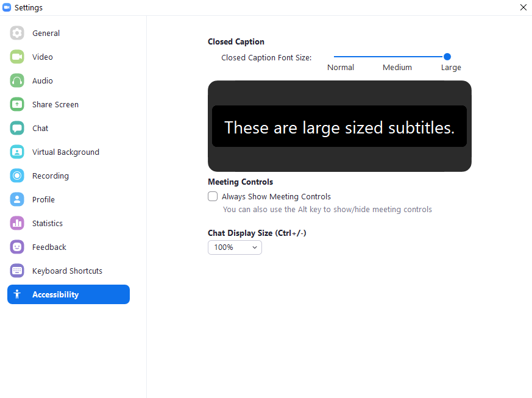

Attendee information
This is information on attending SALT30. Information for presenters can be found here. Please let us know if you have any questions: salt_30@cornell.edu.
Please note that by attending SALT30, you agree to abide by the Code of Conduct.
Attending SALT30
SALT30 will take place online through Zoom. Links will be sent to registered participants on Sunday, August 16.
Please register here in order to get access to the Zoom links to attend SALT30. Registration for SALT30 is free. However, if you are able to pay a fee for registration, this will support the costs of running the conference as well as the LSA, SALT's co-sponsor and host of the SALT proceedings.
The program for SALT30 is available here. Presenters at SALT30 have the option of having their presentation and question period each synchronously or asynchronously.
Asynchronous Component: OSF Repository
Presentations at SALT 30 have their own OSF page on the SALT 30 repository, which you are encouraged to access in your own time. Abstracts will be available for each presentation. Presentation materials will be posted on OSF at the discretion of the presenters.
SALT30 participants will be able to post comments on presenters' OSF project pages. This facilitates asynchronous participation for presenters and attendees who may be out of sync with the conference timezone.
Synchronous Component: Zoom
The conference will be held over Zoom with both pre-recorded and live presentations. Password-protected links to the conference zoom meetings will be sent to registered attendees the day before.
Zoom Etiquette
We will be using the regular Zoom format to hold the conference. This means that we will need to cooperation of all attendees to help make things run smoothly.
All participants will be muted upon entry to the zoom session. We ask that you keep your microphone muted during the presentation, and only unmute yourself during breaks or during the Q&A when instructed by the moderator. The moderator may mute you during a presentation if you forget to do so.
It is up to you whether your camera is on, but we would like to encourage you to turn the camera on during the Q&A period, especially if you are asking a question. You might also consider adding a picture of yourself to display while your camera is off.
Live Q&A
Questions will be handled through Zoom's raise hand feature and the chat. If you would like to ask your question, please raise your hand. If you would like to have your question read, please type it into the chat.
Accessing Materials on OSF
Each presentation's OSF project page is linked from
the program page. You can also access
them directly from the
SALT 30 repository,
which will have the following format:

If you open a link to a project page, I will look like this:

The speech bubble in the upper-right corner gives you access to the comments. You will need to create an OSF account in order to post comments.
Instructions
Before the conference
- Download and install the Zoom app.
- Take a look at the program and the SALT 30 repository.
- Plan and host social gatherings outside of the conference schedule. A shared spreadsheet to organize social events will be shared with registered participants.
During the conferenece
- Watch presentations and ask questions synchronously during the conference Zoom meeting
- Watch presentations and ask questions asynchronously through the OSF pages
- Talk with other attendees during breaks and in independently scheduled meetings
General Zoom tips
- Some features are only available on the computer (desktop) version of Zoom, not on a tablet/phone/etc. More here.
- Turn off background syncing (dropbox, google sync, backups, etc)
- Use a wired connection if you can
- Quit unnecessary applications
- Use headphones if you're in a noisy environment or to reduce feedback
- If you're having trouble with your connection, turn off your video
Captioning
Captioning will be available for all the talks. If you would like to request a captioner for during the poster sessions, please contact salt_30@cornell.edu.
In the following image, you can see where to click on the Zoom bar to enable closed captioning and where the captions will appear.

When you click on the closed caption button, you will get three options: (1) Show/Hide captions, (2) View full transcript, and (3) Subtitle Settings.

Clicking on the "Subtite Settings" will open a window where you can change things such as the caption size and chat text size.
